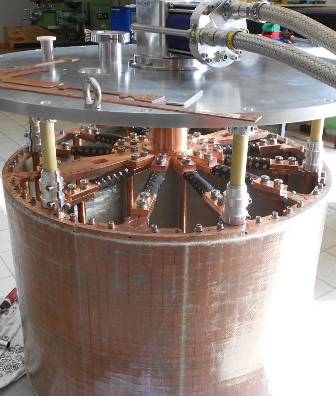

We will now look at perhaps one of the more important laws governing the behavior of transformers and electric machines, which form the backbone of modern industry.
In 1831 Michael Faraday [133] ¶[133]Michael Faraday (1791 - 1867) An English chemist and physicist who contributed to the study of electro-chemistry and electromagnetism. His main discoveries include the principles underlying electromagnetic induction, diamagnetism, and electrolysis. Although Faraday received little formal education, as a self-made man, he was one of the most influential scientists in history [†-1] Rao, C. N. R. Understanding chemistry (Universities Press, 2000). It was by his research on the magnetic field around a conductor carrying a direct current Faraday established the concept of the electromagnetic field in physics. Faraday also established magnetism could affect rays of light and that there was an underlying relationship between the two phenomena. He similarly discovered the principles of electromagnetic induction, diamagnetism, and the laws of electrolysis. His inventions of electromagnetic rotary devices formed the foundation of electric motor technology, and it was largely due to his efforts that electricity became practical for use in technology. The SI unit of capacitance, the farad, is named after him. reported on a series of experiments, including three (3) which can be characterized as follows:
- Experiment 1
-
He pulled a loop of wire to the right through a magnetic field and observed a current flowing in the loop.
- Experiment 2
-
He moved the magnet to the left, holding the loop still and again, observed a current flowing in the loop.
- Experiment 3
-
With both the loop and the magnet at rest, he changed the strength of the field by using an electromagnet, and varied the current in the coil. Once again, he observed current flowing in the loop.
The first experiment, of course, is a straightforward case of motional EMFElectro-motive ForceAn energy transfer to an electric circuit per unit of electric charge, measured in volts. Devices called electrical transducers provide an EMF by converting other forms of energy into electrical energy. Other types of electrical equipment also produce an emf, such as batteries, which convert chemical energy, and generators, which convert mechanical energy. This energy conversion is achieved by physical forces applying physical work on electric charges. However, electromotive force itself is not a physical force; according to the flux rule we have derived earlier:
| (5.14) |
It is worth noting that exactly the same EMFElectro-motive ForceAn energy transfer to an electric circuit per unit of electric charge, measured in volts. Devices called electrical transducers provide an EMF by converting other forms of energy into electrical energy. Other types of electrical equipment also produce an emf, such as batteries, which convert chemical energy, and generators, which convert mechanical energy. This energy conversion is achieved by physical forces applying physical work on electric charges. However, electromotive force itself is not a physical force arises in Experiment 2.
All that really matters is the relative motion of the magnet and the loop
Indeed, in the light of special relativity it has to be so. But Faraday knew nothing of relativity, and in classical electrodynamics this simple reciprocity is a remarkable coincidence. For if the loop moves, it’s a magnetic force that sets up the EMFElectro-motive ForceAn energy transfer to an electric circuit per unit of electric charge, measured in volts. Devices called electrical transducers provide an EMF by converting other forms of energy into electrical energy. Other types of electrical equipment also produce an emf, such as batteries, which convert chemical energy, and generators, which convert mechanical energy. This energy conversion is achieved by physical forces applying physical work on electric charges. However, electromotive force itself is not a physical force, but if the loop is stationary, the force cannot be magnetic as stationary charges experience no magnetic forces.
Well, electric fields do, of course, but in this case there doesn’t seem to be any electric field in sight.
Faraday had an ingenious inspiration:
A changing magnetic field induces an electric field.
It is this induced electric field which accounts for the EMFElectro-motive ForceAn energy transfer to an electric circuit per unit of electric charge, measured in volts. Devices called electrical transducers provide an EMF by converting other forms of energy into electrical energy. Other types of electrical equipment also produce an emf, such as batteries, which convert chemical energy, and generators, which convert mechanical energy. This energy conversion is achieved by physical forces applying physical work on electric charges. However, electromotive force itself is not a physical force in Experiment 2. Indeed, if [134] as Faraday found empirically. the EMFElectro-motive ForceAn energy transfer to an electric circuit per unit of electric charge, measured in volts. Devices called electrical transducers provide an EMF by converting other forms of energy into electrical energy. Other types of electrical equipment also produce an emf, such as batteries, which convert chemical energy, and generators, which convert mechanical energy. This energy conversion is achieved by physical forces applying physical work on electric charges. However, electromotive force itself is not a physical force is again equal to the rate of change of the flux,
| (5.15) |
then is related to the change in by the equation
| (5.16) |
This is Faraday’s law, in integral form and its differential form is derived using Stokes’ theorem:
| (5.17) |
Note that Faraday’s law reduces to the old rule (or, in differential form, in the static case (constant B) as, of course, it should. In Experiment 3, the magnetic field changes for entirely different reasons, but according to Faraday’s law an electric field will again be induced, giving rise to an emf .
Indeed, one can subsume all three cases [135] and for that matter any combination of them. into a kind of universal flux rule: Whenever (and for whatever reason) the magnetic flux through a loop changes, an emf
| (5.18) |
will appear in the loop. Many people call this "Faraday’s law." Maybe I’m overly fastidious, but I find this confusing. There are really two totally different mechanisms underlying Eq. 7.17, and to identify them both as "Faraday’s law" is a little like saying that because identical twins look alike we ought to call them by the same name. In Faraday’s first experiment it’s the Lorentz force law at work; the EMFElectro-motive ForceAn energy transfer to an electric circuit per unit of electric charge, measured in volts. Devices called electrical transducers provide an EMF by converting other forms of energy into electrical energy. Other types of electrical equipment also produce an emf, such as batteries, which convert chemical energy, and generators, which convert mechanical energy. This energy conversion is achieved by physical forces applying physical work on electric charges. However, electromotive force itself is not a physical force is magnetic. But in the other two it’s an electric field (induced by the changing magnetic field) that does the job. Viewed in this light, it is quite astonishing that all three processes yield the same formula for the emf. In fact, it was precisely this "coincidence" that led Einstein to the special theory of relativity-he sought a deeper understanding of what is, in classical electrodynamics, a peculiar accident. But that’s a story for Chapter 12. In the meantime, I shall reserve the term "Faraday’s law" for electric fields induced by changing magnetic fields, and I do not regard Experiment 1 as an instance of Faraday’s law. Keeping track of the signs in Faraday’s law can be a real headache. For in- stance, in Ex. 7.5 we would like to know which way around the ring the induced current flows. In principle, the right-hand rule does the job (we called positive to the left, in Fig. 7.22, so the positive direction for current in the ring is counter- clockwise, as viewed from the left; since the first spike in Fig. 7.23b is negative, the first current pulse flows clockwise, and the second counterclockwise). But there’s a handy rule, called Lenz’s law, whose sole purpose is to help you get the directions right:
Nature abhors a change in flux. The induced current will flow in such a direction that the flux it produces tends to cancel the change. (As the front end of the magnet in Ex. 7.5 enters the ring, the flux increases, so the current in the ring must generate a field to the right-it therefore flows clockwise.) Notice that it is the change in flux, not the flux it- self, that nature abhors (when the tail end of the magnet exits the ring, the flux drops, so the induced current flows counterclockwise, in an effort to restore it). Faraday induction is a kind of "inertial" phenomenon: A conducting loop "likes" to maintain a constant flux through it; if you try to change the flux, the loop re- sponds by sending a current around in such a direction as to frustrate your efforts. (It doesn’t succeed completely; the flux produced by the induced current is typi- cally only a tiny fraction of the original. All Lenz’s law tells you is the direction of the flow.)
Faraday’s law generalises the electrostatic rule, we have derived in previous chapters. [136] to the time-dependent régime. The divergence of is still given by Gauss’s law (). If is a pure Faraday field, [137] due exclusively to a changing , with then:
This is mathematically identical to magnetostatics,
Faraday-induced electric fields are determined by in exactly the same way as magnetostatic fields are determined by . The analog to Biot-Savart is [138] Magnetostatics holds only for time-independent currents, but there is no such restriction on .
| (5.19) |
and if symmetry permits, we can use all the methods and simplifications associated with Ampère’s law in integral form (), only now it’s Faraday’s law in integral form:
| (5.20) |
The rate of change of magnetic flux through the Amperian loop plays the role formerly assigned to .
- ¶
- Information 5.13: The Importance of Time
-
We need to be aware of a small limitation which restricts applications of Faraday's law:
Electromagnetic induction, of course, occurs only when the magnetic fields are changing, and yet we would like to use the apparatus of magnetostatics [139] Ampère’s law, the Biot-Savart law, and the rest. to calculate those magnetic fields.Technically, any result derived in this way is only approximately correct. But in practice the error is usually negligible, unless the field fluctuates extremely rapidly, or if we are interested in points very far from the source. Even the case of a wire snipped by a pair of scissors is considered static enough for Ampère’s law to apply. This régime, in which magnetostatic rules can be used to calculate the magnetic field on the right hand side of Faraday’s law, is called quasistatic.
Generally speaking, it is only when we come to electromagnetic waves and radiation that we must worry seriously about the breakdown of magnetostatics itself.
Suppose we have two (2) loops of wire, at rest (Fig. 7.30). If were to run a steady current around loop 1, it produces a magnetic field . Some of the field lines pass through loop 2; let be the flux of through 2. We might have a tough time actually calculating , but a glance at the Biot-Savart law,
reveals one significant fact about this field:
Therefore, so too is the flux through loop 2:
| (5.21) |
where is the constant of proportionality; it is known as the mutual inductance of the two loops. There is a simple formula for the mutual inductance, which we can derive by expressing the flux in terms of the vector potential, and invoking Stokes’ theorem:
Now, according to Eq. (??):
We can use this equation to derive:
| (5.22) |
This is the Neumann formula; it involves a double line integral;
It’s not very useful for practical calculations, but it does reveal two (2) important things about mutual inductance:
- i.
- is a purely geometrical quantity, having to do with the sizes, shapes, and relative positions of the two loops.
- ii.
- The integral in Eq. (5.22) is unchanged if we switch the roles of loops 1 and 2: it follows that
(5.23) This is an astonishing conclusion:
Whatever the shapes and positions of the loops, the flux through when we run a current around is identical to the flux through 1 when we send the same current I around 2. We may as well drop the subscripts and call them both .
Suppose, now, we vary the current in loop 1. The flux through loop 2 will vary accordingly, and Faraday’s law says this changing flux will induce an EMFElectro-motive ForceAn energy transfer to an electric circuit per unit of electric charge, measured in volts. Devices called electrical transducers provide an EMF by converting other forms of energy into electrical energy. Other types of electrical equipment also produce an emf, such as batteries, which convert chemical energy, and generators, which convert mechanical energy. This energy conversion is achieved by physical forces applying physical work on electric charges. However, electromotive force itself is not a physical force in loop 2: [140] In quoting Eq. 7.22-which was based on the Biot-Savart law-I am tacitly assuming that the currents change slowly enough for the system to be consid- ered quasistatic.
| (5.24) |
What a remarkable thing: Every time you change the current in loop 1, an induced current flows in loop 2-even though there are no wires connecting them! Come to think of it, a changing current not only induces an EMFElectro-motive ForceAn energy transfer to an electric circuit per unit of electric charge, measured in volts. Devices called electrical transducers provide an EMF by converting other forms of energy into electrical energy. Other types of electrical equipment also produce an emf, such as batteries, which convert chemical energy, and generators, which convert mechanical energy. This energy conversion is achieved by physical forces applying physical work on electric charges. However, electromotive force itself is not a physical force in any nearby loops, it also induces an EMFElectro-motive ForceAn energy transfer to an electric circuit per unit of electric charge, measured in volts. Devices called electrical transducers provide an EMF by converting other forms of energy into electrical energy. Other types of electrical equipment also produce an emf, such as batteries, which convert chemical energy, and generators, which convert mechanical energy. This energy conversion is achieved by physical forces applying physical work on electric charges. However, electromotive force itself is not a physical force in the source loop itself (Fig 7.33). Once again, the field (and therefore also the flux) is proportional to the current:
| (5.25) |
The constant of proportionality is called the self inductance [141] or simply the inductance. of the loop. As with , it depends on the geometry of the loop. If the current changes, the EMFElectro-motive ForceAn energy transfer to an electric circuit per unit of electric charge, measured in volts. Devices called electrical transducers provide an EMF by converting other forms of energy into electrical energy. Other types of electrical equipment also produce an emf, such as batteries, which convert chemical energy, and generators, which convert mechanical energy. This energy conversion is achieved by physical forces applying physical work on electric charges. However, electromotive force itself is not a physical force induced in the loop is
| (5.26) |
Inductance is measured in henries (H); a henry is a volt-second per ampere.
Inductance, similarly to capacitance, is an intrinsically positive quantity. Lenz’s law, which is enforced by the minus sign in Eq. (5.26), dictates that the EMFElectro-motive ForceAn energy transfer to an electric circuit per unit of electric charge, measured in volts. Devices called electrical transducers provide an EMF by converting other forms of energy into electrical energy. Other types of electrical equipment also produce an emf, such as batteries, which convert chemical energy, and generators, which convert mechanical energy. This energy conversion is achieved by physical forces applying physical work on electric charges. However, electromotive force itself is not a physical force is in such a direction as to oppose any change in current. For this reason, it is called a back emf. Whenever you try to alter the current in a wire, you must fight against this back emf. Inductance plays somewhat the same role in electric circuits that mass plays in mechanical systems: The greater is, the harder it is to change the current, just as the larger the mass, the harder it is to change an object’s velocity.
It takes a certain amount of energy to start a current flowing in a circuit. Here, were are NOT talking about the energy delivered to the resistors and converted into heat. [142] that is irretrievably lost, as far as the circuit is concerned, and can either be large or small, depending on how long the current is left to run. What we are concerned with, rather, is the work we must do against the back emf to get the current going. This is a fixed amount, and it is recoverable:
In the meantime, it represents energy present in the circuit, and as we’ll see in a moment, it can be regarded as energy stored in the magnetic field. The work done on a unit charge, against the back EMFElectro-motive ForceAn energy transfer to an electric circuit per unit of electric charge, measured in volts. Devices called electrical transducers provide an EMF by converting other forms of energy into electrical energy. Other types of electrical equipment also produce an emf, such as batteries, which convert chemical energy, and generators, which convert mechanical energy. This energy conversion is achieved by physical forces applying physical work on electric charges. However, electromotive force itself is not a physical force, in one trip around the circuit is . [143] The minus sign records the fact that this is the work done by us against the EMFElectro-motive ForceAn energy transfer to an electric circuit per unit of electric charge, measured in volts. Devices called electrical transducers provide an EMF by converting other forms of energy into electrical energy. Other types of electrical equipment also produce an emf, such as batteries, which convert chemical energy, and generators, which convert mechanical energy. This energy conversion is achieved by physical forces applying physical work on electric charges. However, electromotive force itself is not a physical force, not the work done by the EMFElectro-motive ForceAn energy transfer to an electric circuit per unit of electric charge, measured in volts. Devices called electrical transducers provide an EMF by converting other forms of energy into electrical energy. Other types of electrical equipment also produce an emf, such as batteries, which convert chemical energy, and generators, which convert mechanical energy. This energy conversion is achieved by physical forces applying physical work on electric charges. However, electromotive force itself is not a physical force itself. The amount of charge per unit time passing down the wire is . Therefore, the total work done per unit time is:
If we start with zero current and build it up to a final value , the work done [144] integrating the last equation over time is:
| (5.27) |
It does not depend on how long we take to crank up the current, only on the geometry of the loop [145] Which this information is encoded in the inductance. and the final current . There is a cleaner way to write , which has the advantage that it is readily generalized to surface and volume currents. Remember that the flux through the loop is equal to shown in Eq. (5.25) . On the other hand,
where the line integral is around the perimeter of the loop. We can then make the conclusion that:
In this form, the generalization to volume currents is obvious:
| (5.28) |
But we can do even better, and express entirely in terms of the magnetic field: Ampère’s law, , lets us eliminate J:
| (5.29) |
Integration by parts transfers the derivative from B to ; specifically, product rule 6 states that
which allows us to write:
Consequently,
| (5.30) |
where is the surface bounding the volume .
Now, the integration in Eq. (5.28) is to be taken over the entire volume occupied by the current. But any region larger than this will do just as well, for is zero out there anyway. In Eq. (5.30), the larger the region we pick the greater is the contribution from the volume integral, and therefore the smaller is that of the surface integral. [146] This makes sense, as the surface gets farther from the current, both and decrease. In particular, if we agree to integrate over all space, then the surface integral goes to zero, and we are left with
| (5.31) |
In view of this result, we say the energy is stored in the magnetic field, in the amount per unit volume. This is a nice way to think of it, though someone looking at Eq. (5.28) might prefer to say that the energy is stored in the current distribution, in the amount per unit volume. [147] The distinction is one of bookkeeping as the important quantity is the total energy , and we need not worry about where the energy is located.
We might find it strange that it takes energy to set up a magnetic field given magnetic fields themselves do no work. The point is that producing a magnetic field, where previously there was none, requires changing the field, and a changing B-field, according to Faraday, induces an electric field.
The latter, of course, can do work.
In the beginning, there is no , and at the end there is no ; but in between, while is building up, there is an , and it is against this that the work is done. In the light of this, it is extraordinary how similar the magnetic energy formulas are to their electrostatic counterparts:
- ¶
- Information 5.14: Superconducting Magnetic Energy Storage System
-
Superconducting magnetic energy storage systems [148] ¶

[148]An example of a SMES produced by FRAKO-TERM store energy in the magnetic field created by the flow of direct current in a superconducting coil that has been cryogenically cooled to a temperature below its superconducting critical temperature. This use of superconducting coils to store magnetic energy was invented by M. Ferrier in 1970.[2]A typical SMES system includes three parts: superconducting coil, power conditioning system and cryogenically cooled refrigerator. Once the superconducting coil is energized, the current will not decay and the magnetic energy can be stored indefinitely.
The stored energy can be released back to the network by discharging the coil. The power conditioning system uses an inverter/rectifier to transform alternating current (AC) power to direct current or convert DC back to AC power. The inverter/rectifier accounts for about 23% energy loss in each direction. SMES loses the least amount of electricity in the energy storage process compared to other methods of storing energy. SMES systems are highly efficient; the round-trip efficiency is greater than 95%.[3]
Due to the energy requirements of refrigeration and the high cost of superconducting wire, SMES is currently used for short duration energy storage. Therefore, SMES is most commonly devoted to improving power quality.
-
¶
- EMFElectro-motive Force
An energy transfer to an electric circuit per unit of electric charge, measured in volts. Devices called electrical transducers provide an EMF by converting other forms of energy into electrical energy. Other types of electrical equipment also produce an emf, such as batteries, which convert chemical energy, and generators, which convert mechanical energy. This energy conversion is achieved by physical forces applying physical work on electric charges. However, electromotive force itself is not a physical force
- 1.
- Rao, C. N. R. Understanding chemistry (Universities Press, 2000)
- [134].
- as Faraday found empirically.
- [135].
- and for that matter any combination of them.
- [136].
- to the time-dependent régime. The divergence of is still given by Gauss’s law ().
- [137].
- due exclusively to a changing , with
- [138].
- Magnetostatics holds only for time-independent currents, but there is no such restriction on .
- [139].
- Ampère’s law, the Biot-Savart law, and the rest.
- [140].
- In quoting Eq. 7.22-which was based on the Biot-Savart law-I am tacitly assuming that the currents change slowly enough for the system to be consid- ered quasistatic.
- [141].
- or simply the inductance.
- [142].
- that is irretrievably lost, as far as the circuit is concerned, and can either be large or small, depending on how long the current is left to run.
- [143].
- The minus sign records the fact that this is the work done by us against the EMFElectro-motive ForceAn energy transfer to an electric circuit per unit of electric charge, measured in volts. Devices called electrical transducers provide an EMF by converting other forms of energy into electrical energy. Other types of electrical equipment also produce an emf, such as batteries, which convert chemical energy, and generators, which convert mechanical energy. This energy conversion is achieved by physical forces applying physical work on electric charges. However, electromotive force itself is not a physical force, not the work done by the EMFElectro-motive ForceAn energy transfer to an electric circuit per unit of electric charge, measured in volts. Devices called electrical transducers provide an EMF by converting other forms of energy into electrical energy. Other types of electrical equipment also produce an emf, such as batteries, which convert chemical energy, and generators, which convert mechanical energy. This energy conversion is achieved by physical forces applying physical work on electric charges. However, electromotive force itself is not a physical force itself.
- [144].
- integrating the last equation over time
- [145].
- Which this information is encoded in the inductance.
- [146].
- This makes sense, as the surface gets farther from the current, both and decrease.
- [147].
- The distinction is one of bookkeeping as the important quantity is the total energy , and we need not worry about where the energy is located.